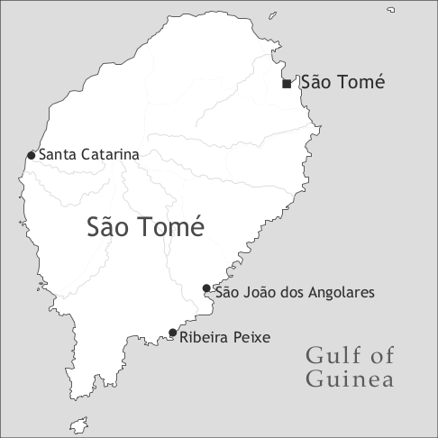

by Philippe Maurer

Angolar is a Maroon creole spoken in the western and south-eastern part of the island of São Tomé (Democratic Republic of São Tomé and Príncipe). The most important villages where Angolar is spoken are Santa Catarina on the west coast and São João dos Angolares as well as Ribeira Peixe on the east coast.
Angolar is an offshoot of an early stage of Santome (see Hagemeijer 2012, this volume) and is related to the other two Gulf of Guinea creoles (Principense, see Maurer 2012c, this volume, and Fa d’Ambô, see Post 2012, this volume), but differs from these in that it has an important amount of words of Bantu, mostly Kimbundu, origin (about 15% of the lexicon; see Maurer (1992) and below), which are probably due more to adstrate than to substrate influence.
Publications about the language are scarce. Ferraz (1974) offers some information about the history of the Angolar community and some remarks on the language; Ferraz (1976) and (1978) contain some Angolar words, and Hancock (1975) offers a list of about 100 Angolar words which were provided to the author by Ferraz. The first descriptive grammar of Angolar is Maurer (1995), followed by Lorenzino (1998), which contains an extensive section on the social history of the Angolar community and which concentrates on a structural comparison between Angolar and Santome. Maurer (1999) contrasts the serial verb ‘put’ in Angolar with the same verb in Santome and Principense, Maurer (1992) analyzes the origin of the Bantu part of the Angolar lexicon, and Lorenzino (2007) corresponds to the chapter on Angolar in Holm & Patrick (2007).
The exact origin of the Angolares is not very well known. They are most probably descendants of Maroons who started to escape from the plantations of São Tomé in the first half of the 16th century and who most probably took a primitive form of Santome with them. However, the existence of the Angolares as such is not attested until the first part of the 17th century.
Another scenario for the origin of the Angolares is the so-called shipwreck hypothesis. According to this hypothesis, which plays an important role in Angolar folklore, the Angolares are descendants of slaves from Angola who survived a shipwreck on the southern coast. For this scenario, however, which supposedly took place in the mid-sixteenth century, there is no contemporaneous documentation, since it was mentioned for the first time in a manuscript written in the 1710s. (Lorenzino 1998: 259).
Lorenzino (1978: 45, 53, 64) establishes three basic periods for the history of the Angolares. The first period (1500–1700) is one of confrontation during which the Angolares raided plantations as well as the town of São Tomé.
The second period (1700–1850) is characterized by the normalization of the relationship between the Angolar community on the one hand, and the plantation owners as well as the Portuguese colonial authorities on the other. This period started in 1693, when a truce between the Angolares and the Portuguese authorities was established.
The third period started in 1850 and lasts up to now; its main characteristic is diaspora, first forced and later free. The diaspora commenced when the cultivation of coffee and cocoa was introduced on São Tomé. Until the mid-nineteenth century, the plantations were located in the northern part of the island of São Tomé; but then, the plantation owners started to expand southwards and expelled the Angolares from their lands. Originally, the Angolares had mostly lived on the east coast of São Tomé – although some small communities had settled on the west coast – but then many Angolares were relocated in the south-western part of the island, around São João dos Angolares. After this difficult period for the Angolar community, many Angolares moved northwards in search of a better living.
Angolar, like its speakers, does not enjoy a high prestige, which becomes apparent e.g. in the fact that in the 2006 census, Angolar was not mentioned as a separate category, in contrast to the other national languages Santome and Principense. Angolar was subsumed under the category ‘other languages’, i.e. with foreign languages like Cape Verdean or Bantu languages from Angola and Mozambique. This is the reason why it is difficult to establish the real number of Angolar speakers, which is estimated at around 5,000.
Angolar is not (yet) an endangered language, since it still is the first language of many children; however, the pressure from Santome and Portuguese is very strong.
There are no written documents in the language, but some songs are produced in Angolar, and the radio news flashes have been read in Angolar (as well as in Santome and Principense), with some interruptions, since the 1990s.
Angolar possesses 7 oral and 5 nasal vowels; only the close-mid oral vowels have no nasal counterpart. In contrast to the other Gulf of Guinea creoles, nasal vowels are not very frequent in Angolar; ũ, for example, occurs almost exclusively in ũa ‘one’, but this word is very frequent. Orthographic representations of phonemes which differ from IPA spelling are indicated in angle brackets in Tables 1 and 2.
|
Table 1. Vowels |
|||
|
front |
central |
back |
|
|
close |
i , ĩ <in> |
u , ũ |
|
|
close-mid |
e <ê> |
o <ô> |
|
|
open-mid |
ɛ <e> / ɛ̃ <en> |
ɔ <o> / ɔ̃ <on> |
|
|
open |
a / ã |
||
Besides these oral and nasal vowels, Angolar possesses a syllabic nasal /ṇ/ <n’>, which is realized as [ṃ] <m’> before b, m, p, and [ŋ̭] <n’> before g, k. Some examples are m’me ‘eat’ (< Portuguese comer), n’kome ‘fist’ (< Kikongo nkome), and n’sikitu ‘mosquito’ (< Portuguese mosquito).
The tonal system of Angolar is not fully investigated, yet a preliminary analysis of disyllabic nouns in subject position followed by a disyllabic verb modified by the future marker ka shows that there exist four different tone melodies (HH, HL, LH, LL), which points to a two-tone system (own fieldwork, 2008):
(1) áwá ká gàʃtà ‘The water will be wasted.’
water fut waste
fóθà ká kàbà ‘The energy will come to an end.’
energy fut end
kàθó ká pèndè ‘The dog will get lost.’
dog fut lose
àlè ká pɛ̀nθà ‘The king will think.’
king fut think
Tonal distinctions are also used in order to differentiate syntactic categories, especially verbs from nouns, as in ðùrà ‘to help’ vs. ðúrá ‘help’.
Angolar has 30 consonants, of which 7 are prenasalized and 3 glides, as shown in Table 2.
|
Table 2. Consonants |
||||||||
|
bilabial |
labio-dental |
dental/alveolar |
alveo-palatal |
interdental |
palatal |
velar |
||
|
plosive |
voiceless |
p |
t |
k |
||||
|
voiced |
b |
d |
g |
|||||
|
nasal |
m |
n |
ŋ |
|||||
|
prenasalized |
voiceless |
mp |
nf |
ŋk <nk> |
||||
|
voiced |
mb |
nd |
ŋg <ng> |
|||||
|
affricate |
ndʒ <ndj> |
|||||||
|
tap/trill |
r |
|||||||
|
fricative |
voiceless |
f |
s |
ʃ <x> |
θ <th> |
|||
|
voiced |
v |
z |
ʒ <j> |
ð <dh> |
||||
|
affricate |
voiceless |
tʃ <tx> |
||||||
|
voiced |
dʒ <dj> |
|||||||
|
lateral |
l |
|||||||
|
glide |
w |
j <y> / ȷ̃ <nh> |
||||||
Prenasalized plosives and fricatives are relatively frequent: mbedha ‘table’ (< Portuguese mesa), ndatxi ‘root’ (< Kimbundu ndandji), mpêlu ‘turkey’ (< Portuguese peru), ndjibela ‘pocket’ (< Portuguese algibeira), nfenu ‘hell’ (< Portuguese inferno), or ngaba ‘to praise’ (< Portuguese gabar).
The alveo-palatal and interdental fricatives s vs. θ and z vs. ð are in complementary distribution. s and z occur before i, θ and ð before the other vowels. In loans from Santome and Portuguese, this complementary distribution may be neutralized and forms like Baso instead of Batho ‘Sebastian’ may occur.
(2) /θ/, /ð/ a thaguri ‘shake’ /s/, /z/ i sikêvê ‘to write’
dhamba ‘elephant’ zina ‘grandmother’
e thêndê ‘to switch on’
dhêndê ‘to defecate’
ɛ theku ‘dry’
dhema ‘to moan’
o thô ‘only’
ɔ thono ‘sleep’
dholo ‘fish-hook’
u thudhu ‘dirty’
dhula ‘help’
The shift from etymological d to r, as in rôthu ‘two’ < Portuguese dois is very frequent; however, there is variation between r, d, and also l (probably because of influence from Santome, which mostly lacks r and replaces etymological r by l, as in alê ‘king’ < Portuguese rei): riba ~ diba ‘top, on top of’ (< Portuguese arriba ‘above’), ruê ~ duê ‘to hurt’ (< Portuguese doer), rêlu ~ dêlu ~ lêlu ‘money’ (< Portuguese dinheiro). In sentence-initial position, d seems to be preferred over r.
The nasal palatal glide, written <nh>, is always pronounced ȷ̃, never ɲ.
The syllable structure is of the (C)V type; up to four syllables are possible: a-dha ‘wing’, ne-ne-ka ‘to endanger’, or ma-ra-ka-tho ‘demarcation’. Closed syllables only occur word-internally with a nasal in coda position (an-da ‘to chew’).2 Consonant clusters exist only in loans (sta-ka ‘stake, pole’) and in onomatopoetic words (tre-tre, which imitates the hopping of a bird and also designates a kind of bird).
The noun is invariable. Natural gender is either distinguished by different words, as mama ‘mother’ vs. tata ‘father’ or ome ‘man’ vs. mengai ‘woman’, or by postposed mengai ‘woman’ and ome ‘man’, as in n’na ome ‘son’ vs. n’na mengai ‘daughter’ or bue ome ‘bull’ vs. bue mengai ‘cow’.
Diminutives are built with n’na ‘child’ (< Portuguese menina ‘girl’), as in n’na parô ‘little basket’, and augmentatives with mama ‘mother’, as in mama n’dhonge ‘big basket’.
Plural number is formed with preposed ane ~ ene, which corresponds to the third person plural pronoun, as in ane mengai ‘the women’ or ene kai ‘the houses’. The plural marker is also used as an associative plural marker (ane Maya ‘Maria and her family / her friends’). Note that the plural marker is only used in definite noun phrases; furthermore, proper nouns, unique nouns (tholo ‘sun’), mass nouns (awa ‘water’), generic noun phrases, and indefinite plural noun phrases are not marked by a determiner.
Angolar has no definite article; the indefinite article corresponds to the numeral ũa ‘one’, as in ũa thoya ‘a story’.
The adnominal demonstratives e ~ dhe ~ the ‘this’ (proximal), si ~ si-e ~ si-dhe ‘that’ (distal, not far away), and dha ~ si-dha (distal, far away) follow the noun, as in ngê e ‘this person’, ene mengai dhe ‘these women’, or ome si-dhe ‘that man’. The forms dhe and dha may be reduplicated (dhe-dhe and dha-dha); in this case dhe-dhe refers to an absolute proximity and dha-dha to an absolute remoteness. When the noun is modified by an adjective, the proximal demonstrative is adjacent to the noun, whereas the distal si-e ~ si-dhe may either follow the adjective (example 3a), or si precedes and e ~ dhe follows the adjective (example 3b).
When a noun is modified by a relative clause, si follows the noun and e ~ dhe is located at the end of the relative clause:
(4) Taba si ngaa si ma ê tê pega e […].
plank dem place dem rel.nsbj 3sg have nail dem
‘[Among] the planks of the place where he had to nail them […].’ (Maurer 1995: 168)
The pronominal demonstratives are mostly formed with isi ~ i and the adnominal demonstratives: isi-dhe ‘this’, isi-dha ‘that’, isi-dha-dha ‘that (yonder)’. The adnominal demonstrative is deleted in case the pronoun is modified by an adjective:
(5) Tambe Maya na ka kôyê isi txororo fô.
also Maria neg pst chose dem small neg
‘But Maria didn’t chose the smallest one.’ (Maurer 1995: 63)
The adnominal possessives (Table 3) follow the noun, as in kai m ‘my house’. The form r’ê (< ri ‘of’’ + ê ‘3sg’) of the third person suggests that the possessives are – at least underlyingly – prepositional phrases.
|
Table 3. Possessives |
||
|
adnominal |
pronominal |
|
|
1sg |
m |
ri m |
|
2sg |
ô |
ri ô |
|
3sg |
r’ê |
ri r’ê |
|
1pl |
no |
ri no |
|
2pl |
thê |
ri thê |
|
3pl |
ane ~ ene |
ri ane ~ ri ene |
The pronominal possessives are formed with the preposition ri ‘of’, which is rarely used in Angolar:
The numerals precede the noun:
| 1 | ũa |
| 2 | rôthu |
| 3 | têêsi |
| 4 | kuana |
| 5 | tano |
| 6 | thamanô |
| 7 | thambari |
| 8 | nake |
| 9 | uvwa |
| 10 | kwin |
| 11 | kwin ne ũa |
| 12 | kwin ne rôthu |
| 13 | kwin ne têêsi |
| 14 | kwin ne kuana |
| 15 | kwin ne tano |
| 20 | makêri |
| 30 | maketatu |
| 40 | makewana |
| 50 | singweta |
| 60 | meethamano |
| 70 | meethambari |
| 80 | makenake |
| 90 | makeuvwa |
| 100 | ũathentu |
| 1,000 | kwin thentu, miri |
The numerals 1, 2, 3, 50, 100, and 1000 are of Portuguese origin; the others are derived from Kimbundu. Note that the Kimbundu numerals for 1 (moxi), 2 (iari), and 3 (tatu) are implicitly present in m’mosi ‘at once, immediately’, 20 (makêri; < Kimbundu makuiniari < ma ‘pl’ + kuinii ‘ten’ + iari ‘two’) and 30 (maketatu < Kimbundu makuinia-tatu). Tens and ones are conjoined by ne (< Kimbundu ni, as in kuinii ni tatu ‘thirteen’, literally ‘ten and three’), which is only used in this construction.
Adjectives are invariant and usually follow the noun, as in buru ngai ‘big stone’; ony bwa ~ bo ‘good’ and ma ‘bad’ precede the noun.
Most adjectives may be modified by the past participle -ru (see below examples 100–103); these forms are considered emphatic (example 7) and are therefore more adequate when used in comparisons (example 8):
(7) M bê ũa buru ngai- ru.
1sg see a stone big- ptcp
‘I saw a big stone.’ (Maurer 1995: 50)
(8) Peru masi peetu- ru Toni.
Pedro more black- ptcp Tony
‘Pedro is blacker than Tony.’ (Maurer 1995: 50)
The comparison of the adjective is formed as presented in Table 4 (see Maurer 1995:52-4).
|
Table 4. Comparison of the adjective |
||
|
construction |
examples |
|
|
comparative of equality |
kako ~ koko ~ oko3 ‘like’ |
Bô tha ngai kako ~ koko ~ oko am. 2sg cop big like 1sg ‘You are as tall as I am.’ |
|
mo ‘measure’ |
Bô tha ngai mo am. 2sg cop big manner 1sg ‘You are as tall as I am.’ |
|
|
comparative of superiority |
masi ‘more’ |
Am masi tame ô. 1sg more big 2sg ‘I am as tall as you are.’ |
|
masi ... rôkê ‘more ... than’ |
Kai ô masi dhangaru rôkê ri m house your more big.ptcp than of mine ‘Your house is bigger than mine.’ |
|
|
masi … patha ‘more … surpass’ |
Ũa tha masi dhangaru patha ôtô. one cop more big.ptcp pass other ‘One is bigger than the other.’ |
|
|
superlative |
masi ‘more’ |
Maya masi txororo. Maria more small ‘Maria is the shortest.’ |
Dependent and independent personal pronouns as well as adnominal possessives are presented in Table 5. There are only two independent pronouns which differ from dependent pronouns, namely 1st and 3rd person singular. These independent pronouns can be used as subjects, objects, or in prepositional phrases.
|
Table 5. Personal pronouns and adnominal possessives |
||||
|
dependent pronouns |
independent pronouns |
adnominal possessives |
||
|
subject |
object |
|||
|
1sg |
m ~ n |
m |
am |
m |
|
2sg |
bô ~ ô |
ô |
ô |
|
|
3sg |
ê |
ê ~ e ~ le |
êlê |
r’ê |
|
1pl |
no |
no |
no |
|
|
2pl |
êthê ~ thê |
thê |
thê |
|
|
3pl |
ane ~ ene |
ane ~ ene ~ ne |
ane ~ ene |
|
|
indefinite |
a |
|||
The indefinite pronoun a, of Edo origin, is only used as a subject pronoun and fulfils the function of a generic pronoun:
(9) Fetha e, […] a ka zi kani pôkô […].
celebration dem indf hab prepare meat pork
‘During these celebrations, one prepares pork.’ (Maurer 1995: 61)
It can also be used instead of a second or third person pronoun:
(10) A tha ku ê kikiê bêndê?
indf be with it fish sell
‘Dou you sell fish?’ (Maurer 1995: 62)
(11) A ka be ne Diziboa […].
indf hab go 3pl Lisbon
‘They would go to Lisbon […].’ (Maurer 1995: 61)
Note that the verb ‘go, leave’ is an idiomatic combination consisting of the verb stem be (which is realized as bê in certain contexts) and the possessive pronoun (bê r’ê, literally ‘go of.him’, be ne ‘go (of.)them’), and that in example (11) the indefinite pronoun a is coreferential with ne ‘they’.
The third person singular pronoun is also used as an optional expletive pronoun:
(12) Ê siga m.
expl arrive 1sg.obj
‘It’s enough for me.’ (Maurer 1995: 60)
(13) Olo ma ê vitxa kwin anu […].
hour rel expl arrive ten year
‘After ten years […].’ (lit.: ‘When ten years arrived […].’) (Maurer 1995: 61)
(14) ___ Siga têêsi ria […].
arrive three day
‘The third day arrived […].’ (Maurer 1995: 61)
Modifying nouns or noun phrases follow the modified noun, as in mulu kai ‘the wall of the house’ or ũa kanua dô ome ‘a canoe for two persons’.
Table 6 summarizes word order in the noun phrase: the plural marker ane ~ ene precedes the noun; some determiners precede and some follow the noun; adjectives (except for bwa ~ bo ‘good’ and ma ‘bad’) follow the noun; nouns in apposition and relative clauses also follow the noun.
|
Table 6. Structure of the noun phrase |
||
|
prenominal |
postnominal |
|
|
plural marker ane ~ ene indefinite article ũa |
||
|
numerals |
||
|
demonstrative determiners indefinite determiners kara ‘every’, ndjô ‘many’, ôtô ‘other’, turu ‘all’, 'many’, txo ‘little’, and ũa ‘same’ interrogative determiners kantu ‘how’ and kê ‘which’ |
possessive determiners indefinite determiners me ‘same’, motxi ‘many’, n’tu ‘many’, ovo ‘same’ interrogative determiner kutxi ‘which’ |
|
|
adjectives bo ‘good’ and ma ‘bad’ |
all other adjectives |
|
|
NPs in apposition |
||
|
relative clauses |
||
Angolar has three overt tense, aspect and mood markers (imperfective ka, progressive thêka, and past ta) and a zero marker; the following two combinations occur: ta ka and ka thêka. For the functional analysis of the markers, three lexical aspects (or aktionsarten) have to be distinguished: dynamic verbs, type-1 statives (which are zero-marked for present reference) and type-2 statives (which are marked by ka for present reference and by Ø for past perfective reference). The list of the two different types of statives is given in Table 7.
|
Table 7. Classification of stative verbs |
|||
|
type-1 statives |
type-2 statives |
||
|
eta |
‘know’ |
kôntê |
‘hate’ |
|
fata |
‘lack’ |
kuxta |
‘cost’ |
|
mêthê |
‘want, love’ |
ngotha ki |
‘like’ |
|
pô |
‘can, be allowed’ |
pô |
‘can, be able’ |
|
redha |
‘wish’ |
ta |
‘live, stay’ |
|
tê |
‘have’ |
||
|
tha |
‘be’ |
||
There does not seem to be a semantic reason for differentiating the two stative verb categories; for example, mêthê ‘want, love’ is a type-1 stative, whereas its antonym, kôntê ‘hate’, is a type-2 stative. However, there is one verb appearing in both categories, pô ‘can’, that shows a semantic difference. As a type-1 stative, pô refers to deontic possibility (permission), but as a type-2 stative, it is an ability verb:
(15) Odhe bô Ø pô thata, n ga mat’ô.
today 2sg prs can jump 1sg fut kill=2sg
‘Today you can jump (as much as you want), (but) I’m going to kill you.’
(type-1 stative, present reference, permission) (Maurer 1995: 69)
(16) Aie n na ka pô siê wa.
now 1sg neg ipfv can go.out neg
‘Now I cannot go out.’
(type-2 stative, present reference, participant-external possibility) (Maurer 1995: 70)
The functions of the tense, aspect, and mood markers and their combinations are summarized in Table 8.
|
Table 8. Tense-Aspect-Mood markers |
|||
|
lexical aspect |
tense/aspect |
mood |
|
|
Ø |
type-1 statives |
simple present habitual present |
hypothesis |
|
dynamic verbs, type-2 statives |
perfective past |
||
|
ka4 |
all |
future, habitual present |
counterfactual |
|
dynamic verbs |
habitual/generic present |
||
|
type-2 statives |
imperfective present |
||
|
thêka ~ thaka ~ tha |
dynamic verbs |
progressive present |
|
|
ta |
type-1 statives |
imperfective past |
|
|
ta ka |
all verbs |
habitual past |
|
|
dynamic verbs |
progressive past |
||
|
type-2 statives |
imperfective past |
||
|
ka thêka |
dynamic verbs |
habitual progressive |
epistemic modality deontic necessity |
The following examples illustrate some uses of Ø, ka, thêka, and ta:
(18) Kwa ê Ø mêthê?
thing 3sg prs want
‘What does he want?’ (stative verb, present reference) (Maurer 1995: 71)
(19) Têtêuga Ø tua taba pega.
turtle pfv take plank nail
‘Turtle took a plank and nailed it.’ (dynamic verb, past perfective) (Maurer 1995: 70)
(20) Tepu nakulu, no Ngola ka zi kai no kota mionga […].
time old 1pl Angolar hab do house poss.1pl side sea
‘In the olden times, we the Angolares used to build our houses at the seaside.’ (habitual) (Maurer 1995: 74)
(21) N ga gotha ki mama m.
1sg prs love with mother poss.1sg
‘I love my mother.’ (type-2 statives, present reference) (Maurer 1995: 73)
(23) […] n ta kwa ma Alê thêka pensa dha.
1sg know thing rel.nsbj king prog think already
‘[…] I already know what you are thinking.’ (present progressive) (Maurer 1995: 78)
(24) Ê ta mêthê Maya naria.
3sg pst love Maria formerly
‘Formerly, he loved Maria.’ (past of type-1 statives) (Maurer 1995: 81)
Example (20) shows that tense, i.e. ta, does not have to be marked if the context is clearly past.
In the protasis of conditional sentences, Ø refers to hypothetical and ka to counterfactual conditions, present or past, whereas ka is used for both hypothetical and counterfactual consequences in the apodosis:
(25) Si Rêthu Ø ra m lêlu, n ga zi kwa ma m mêthê.
if God mod give 1sg money 1sg fut do thing rel.nsbj 1sg want
‘If God gives me money, I’ll do what I want.’ (Maurer 1995: 72)
(26) Si Rêthu ka da m lêlu, n ga zi kwa ma m mêthê.
if God mod give 1sg money 1sg fut do thing rel.nsbj 1sg want
‘If God gave me money (now), I would do what I want.’ ~
‘If God had given me money, I would have done what I wanted.’ (Maurer 1995: 128)
Unlike Santome and Principense, Angolar does not permit ta (which is realized tava in Santome and Principense) to combine with dynamic verbs, yielding a pluperfect reading. This means that Angolar lacks the Bickertonian category “anterior”. Because of the impossibility for ta to modify dynamic verbs, it is not possible to combine three overt markers in Angolar; therefore only the combinations ta ka and ka thêka are possible. The functional domain of ta ka shows that the opposition between thêka (progressive) and ka (habitual), which exists in the present, is neutralized in the past and in some other contexts.
(27) Olo ma no ta ka fa, ê me Malê pua m’mosi.
hour rel 1pl pst prog talk 3sg self Manuel appear at.once
‘When we were talking, Manuel suddenly appeared.’ (past progressive) (Maurer 1995: 81)
(28) Tepu nakulu no ta ka vega kikiê ra pato.
time old 1pl pst hab bring fish give boss
‘Formerly, we would bring fish to the boss.’ (past habitual) (Maurer 1995: 81)
(29) A ka thêka foga.
indf hab prog dance
‘They are always dancing.’ (habitual progressive) (Maurer 1995: 82)
(30) Aie ê ka thêka foga.
now 3sg mod prog dance
‘He is probably dancing right now.’ (epistemic modality) (Maurer 1995: 82)
(31) Ê ka thêka taba aie, mazi ê na be wa.
3sg mod prog work now but 3sg neg go neg
‘He should be working right now, but he didn’t go (to work).’ (deontic necessity) (Maurer 1995: 83)
A limited number of adjectives (nhuka ‘beautiful’, fwê ‘ugly’, and bwa ‘good’) may be modified by the progressive marker thêka with the inchoative meaning of ‘become’:
(32) Ê thêka fwê bê r’ê.
3sg prog ugly go of=3sg
‘He is becoming completely ugly.’ (Maurer 1995: 79)
This and the fact that some adjectives may combine with the marker of the past participle (see examples 7 and 8, above) shows that the drawing line between adjectives and verbs is not clear-cut. However, the adjectives that may be modified by thêka may not be modified by ka, unlike the qualificative verbs commented on below (see examples 50–52); furthermore, they may be headed by the copula when occurring in predicative position, which is not the case with qualificative verbs.
The copula has the form tha (present) or ta (past); it is optional with predicative nouns and adjectives, but obligatory with locative nouns:
(34) Ê (tha) pisikarô.
3sg cop fisherman
‘He is a fisherman.’ (Maurer 1995: 92, 94)
(35) Peru tha kai.
Pedro cop house
‘Pedro is at home.’ (Maurer 1995: 93)
A semantic difference between the presence and the absence of the copula exists only with past participles. The absence of the copula refers to an inherent property of the subject, and the presence of the copula refers to the result of a previous action:
(36) Mionga e ___ bongaru.
sea dem increase.ptcp
‘Here, the sea is deep.’ (inherent property) (Maurer 1995: 94)
The existential can be expressed in four different ways: tê ‘have’, tha ki ‘be with’, tha ku ê ‘be with it’, and the ‘there is’:
(38) Tepu nakulu kwanda tia ta tê ũa ome.
time old height ground pst exist art man
‘In the olden days, on a high ground, there was a man.’ (Maurer 1995: 103)
(39) Nge tha ku ê malua. (Or: Nge tha ki malua.)
here cop with 3sg mud
‘There is mud here.’ (Maurer 1995: 103)
(40) Mungu kikiê na the wa.
tomorrow fish neg exist neg
‘Tomorrow, there won’t be fish.’ (Maurer 1995: 101)
Table 9 shows the different functions of modal verbs.
|
Table 9 . Modal verbs |
|||
|
obligation |
possibility |
probability |
|
|
ability |
– |
pô, eta |
– |
|
deontic modality |
tê ‘have to’, thala ‘necessary’, pôdja ‘should’ |
pô |
– |
|
epistemic modality |
pô |
pô, pôdja |
pôdja |
Obligation is expressed by tê ‘have to’, the impersonal thala ‘it is necessary’, and pôdja ‘should’:
(41) Taba si ngaa si ma ê tê pega e […].
plank dem place dem rel.nsbj 3sg have nail dem
‘[Among] the planks of the place where he had to nail them […].’ (Maurer 1995: 168)
(42) […] aidhe thala no ba mionga mungu ringi a!
now necessary 1pl go sea tomorrow again pcl
‘[…] now it is necessary that tomorrow we go back to sea again!’ (Maurer 1995: 102)
(43) Ê pôdja ka ba mionga odhe, detha mungu ta r’ê.
3sg could fut go sea today leave tomorrow stay of=3sg
‘He should go to sea today, not tomorrow.’ (Maurer 1995: 99)
The verb pô ~ pôi fulfils the functions of deontic possibility, ability, and epistemic possibility. When this verb refers to deontic possibility (permission), it behaves like a type-2 stative verb, i.e. it is modified by Ø for present reference (example 44). When expressing participant external ability and epistemic possibility, it behaves like a type-1 stative verb, being modified by ka for present reference (examples 45 and 46, as stated above).
(44) Odhe bô Ø pô thata, n ga mat’ô.
today 2sg prs can jump 1sg fut kill.2sg
‘Today you can jump (as much as you want), I am going to kill you.’ (permission) (Maurer 1995: 69)
(45) Aie n na ka pô siê wa.
now 1sg neg ipfv can go.out neg
‘Now I cannot go out.’ (participant-external possibility) (Maurer 1995: 70)
(46) I na ta ngê m’me minhu si-e, ê ka pô tha Têtêuga.
and neg know person eat corn dem=dem expl prs can cop turtle
‘And one doesn’t know who ate the corn; it could be Turtle.’ (epistemic possibility) (Maurer 1995: 164)
Participant-internal ability is rendered by eta ‘know’:
(47) Ê na eta landa wa.
3sg neg know swim neg
‘He cannot swim.’ (Maurer 1995: 104)
The form pôdja (< Portuguese podia, which is the pretérito imperfeito of poder ‘can, be able’) may express obligation (see above example 43) and epistemic possibility.
(48) Minhu si-e, bô pôdja m’me kwa ô.
corn dem-dem 2sg could eat thing poss.2sg
‘The corn, maybe it is you who ate it.’ (epistemic possibility) (Maurer 1995: 98)
The behaviour of pôdja is irregular, since it precedes the tense, aspect, and mood markers, as in example 43; moreover, it cannot itself be modified by such markers, which must be related to the fact that it is derived from a Portuguese finite form.
Volition is rendered by the verb mêthê ‘want, love’, derived from the Portuguese noun mester ‘necessity’:
The following qualificative verbs occur in Angolar: dhanga ‘become/be tall’, manga ‘become/be bitter’, kula ‘become/be big’, neta ‘become/be fat’, rema ‘become/be heavy’, txanana ‘become/be slippery’, and txima ‘become/be strong’ (Maurer 1995: 96). Except for manga, which is of Portuguese origin (amargar ‘be bitter’), all qualificative verbs are of Bantu (Kimbundu) origin. To a certain extent, they behave like type-2 statives, with zero-marking fulfilling the function of perfective aspect, ka referring to future, and thêka being progressive:
(51) Ngê si-e ka rema n’tu.
person dem=dem fut become.heavy very
‘This person will be very heavy.’ (Maurer 1995: 96)
(52) Ê thêka rema.
3sg prog become.heavy
‘This person is becoming heavy.’ (Maurer 1995: 96)
Serial verb constructions are very frequent in Angolar. The verb ra ‘give’ introduces a recipient or a beneficiary, ba ‘go’ is used as a directional serial verb, bê r’ê ‘leave’ as a telicizer, tambu ‘take’ as a take-serial, and tô as a repetitive:
(53) No ka tega kikiê ra pato.
1pl hab hand.over fish give boss
‘We would hand over fish to the boss.’ (Maurer 1995: 111) (recipient)
(54) Ê na tha tô taba ra ôtô ngê wa.
3sg neg prog rep work give other people neg
‘He is not going to work for other people again.’ (Maurer 1995: 107) (beneficiary)
(55) Ê landa ba paa.
3sg swim go beach
‘He swam to the beach.’ (own fieldwork, 2008) (directional)
(56) N tunda bê m.
1sg get.tired go 1sg
‘I am totally tired.’ (Maurer 1995: 107) (telicizer)
(57) Ê tambu ninha pê thon.
3sg take firewood put ground
‘He put the firewood on the ground.’ / ‘He took the firewood and put it on the ground.’ (own fieldwork, 2008) (take-serial, argument introducing, may have a literal interpretation)
(58) Kathô tambu n’kila r’ê pê kosi bega.
dog take tail of=3sg put under belly
‘The dog put its tail under its belly.’ (own fieldwork, 2008) (take-serial, argument introducing, may not have a literal interpretation)
(59) N tambu faka kota situ (ku ê).
1sg take knife cut meat with 3sg
‘I cut the meat with the knife.’ / ‘I took the knife and cut the meat with it.’ (own fieldwork, 2008) (take-serial, instrumental, may have a literal interpretation)
(60) Tô sisik’e txo!
rep cut=3sg a.little
‘Cut it a little bit more.’ (Maurer 1995: 106) (repetitive)
The serial verb tô (< Portuguese tornar a fazer ‘do something again’) does not function as a main verb any more in modern Angolar.
The verb fa ~ fala ~ fara ‘say, speak’ is used to introduce indirect or direct speech with verbs of speaking (fala ‘speak’, thama ‘call’, or puta ‘ask’); it may be followed by a complementizer (ma, pa, ya):
(61) Kompa ka fa ngwara fala am fala […].
friend fut say guard say 1sg say
‘You will tell the guard that I said […].’ (Maurer 1995: 112)
(62) Ka fa m fala pa m ba kega dhumbi […].
ipfv say 1sg say comp 1sg go carry corpse
‘They told me to go and carry the corpse […].’ (Maurer 1995: 113)
(63) Ê put’e fala: “Maaku ê!”
3sg ask=3sg say monkey voc
‘He asked him: “Monkey!”’ (Maurer 1995: 113)
The verb pê ‘put’ functions as a locative serial verb and plays an important role in Angolar grammar, because this language lacks a general locative preposition (see below). Examples (64a) and (65a) are ambiguous as to the syntactic status of tholo ‘sun’ (temporal or locative argument) and mo ‘hand’ (modifying noun or locative argument); with serial pê ‘put’, the sentence unambiguously has a locative reading:
(64) a. N thêndê kwa bisi e tholo.
3sg spread thing dress dem sun
‘I spread the clothes in the sun.’ / ‘I spread the clothes during daytime.’ (Maurer 1999: 96)
b. N thêndê kwa bisi e pê tholo.
3sg spread thing dress dem put sun
‘I spread the clothes in the sun.’ (Maurer 1999: 96)
(65) a. Ê kega n’na mo.
3sg carry child arm
‘She carried the baby.’ / ‘She carried the child in her arms.’ (Maurer 1999: 96)
b. Ê kega n’na pê mo.
3sg carry child put arm
‘She carried the child in her arms.’ (Maurer 1999: 96)
If in the preceding examples pê is left out, the same meaning is still possible, but depending on the semantics of the first verb in the series, pê may have a directional reading, in contrast to the absence of pê, which then has a locative reading:
(66) a. Ê thaa kanua pê matu.
3sg pull canoe put forest
‘He pulled the canoe into the forest.’ (Maurer 1999: 94)
b. Ê thaa kanua matu.
3sg pull canoe forest
‘He pulled the canoe in the forest.’ (Maurer 1999: 95)
Prepositions are relatively rare; as stated above, there is no general locative preposition like ni ~ n in Santome or na in Principense, and the language lacks a genitive preposition as well.5 The following examples illustrate prepositional phrases.
(67) M ba potho ki ope.
1sg go town with foot
‘I went to town by foot.’ (Maurer 1995: 126)
(68) Ê ka unfwa thala kômbê.
3sg ipfv stink like civet.cat
‘He stinks like a civet-cat.’ (Maurer 1995: 126)
The absence of a general locative preposition is compensated with the serial verb pê ‘put’, as shown above, and also with locative nouns, as for example:
beega ‘belly’ ‘close to, next to’
boka ‘mouth’ ‘close to’
katxi ‘centre’ ‘in the middle of’
kosi ‘bottom’ ‘to/at the bottom of’
lêtu ‘interior’ ‘in, inside’
mema ‘back’ ‘behind’
riba ‘top’ ‘on, on top of’
wê ‘eye’ ‘in front of’
The verb phrase negator is na … wa ~ na ... fô. Na immediately precedes the verb and wa ~ fô is located at the end of the verb phrase. Example (69) shows that the second element of the negation, wa or fô, is placed after an object clause, and example (70) shows that it is placed after a relative clause:
(69) Kompa na thêka êndê ma n thêka bana lêmu ra Kompa wa?
friend neg prog hear comp 1sg prog fan oar give friend neg
‘Didn’t you notice that I was making a sign to you with the oar?’ (Maurer 1995: 132)
(70) N na mêthê mazi si ma ene ka pê fôgô ka thela dha fô […].
1sg neg like oil dem rel 3pl hab put fire hab smell dem neg
‘I don’t like the oil they put on fire and which takes a bad smell […].’ (Maurer 1995: 132)
Furthermore, Angolar has multiple negation:
(71) Ane malandu e na tê nê txo risipêtu wa.
pl rascal dem neg have not.even little respect neg
‘These rascals have absolutely no respect.’ (Maurer 1995: 131)
Angolar has SVO word order in declarative and non-declarative sentences. No core argument is marked; the indirect object, whether nominal or pronominal, always precedes the direct object.
|
adv |
sbj |
neg |
tam |
verb |
io |
do |
adv |
neg |
|
Odhe |
Maya |
na |
ka |
ra |
Peru |
kikiê |
fela |
wa. |
|
today |
Maria |
neg |
fut |
give |
Pedro |
fish |
market |
neg |
|
‘Today Maria won’t give Pedro fish at the market.’ (Maurer 1995: 133) |
||||||||
Subject inversion is found with some non-agentive intransitive verbs like siga or vitxa, both ‘arrive’; the position of the subject may be filled by an expletive pronoun (see examples 12 and 13 above).
The imperative of the second person, singular or plural, may be expressed by the bare verb:
(72) Ondua vungu e ra m.
reinforce song dem give 1sg
'Sing louder!’ (lit.: ‘Reinforce (sg. or pl.) this song for me.’) (Maurer 1995: 140)
But the second person plural pronoun may be used to disambiguate the second person imperative, as in Thê ondua vungu e ra m. [2pl reinforce song dem give 1sg] 'Sing (pl.) louder!’ (lit.: ‘Reinforce (pl.) this song for me.’)
The first person plural imperative is marked by bon (< Portuguese vamos ‘we go; let’s go’), a marker which is formally different from the two Angolar allomorphs of the verb for ‘go’, ba and be.
(73) Bon foga txo!
let’s dance a.little
‘Let’s dance!’ (Maurer 1995: 141)
There is no morphological passive voice. However, a passive-like construction with valency reduction and promotion of the direct object of the transitive verb to subject position is possible:
Reflexive voice is expressed by ôngê ‘body’ with some verbs like mata ‘kill’, foka ‘hang’, or laba ‘wash’ (see 76); with other verbs, the reflexive sense can be expressed by object omission (see 77).
(76) Ê mata ôngê r’ê.
3sg kill body of=3sg
‘He committed suicide.’ (Maurer 1995: 145)
(77) a. M pêndê thapatu m.
1sg lose shoe poss.1sg
‘I lost my shoes.’ (Maurer 1995: 144)
b. M pêndê ___ matu.
1sg lose forest
‘I strayed in the forest.’ (lit.: ‘I lost [myself] in the forest.’) (Maurer 1995: 144)
Causative voice is formed with the verb zi ‘do, make’:
(78) Muê mama r’ê zi e thêka thua.
death mother of=3sg make 3sg prog cry
‘The death of his mother made him cry (lit.: ...that he was crying).’ (Maurer 1995: 148)
Reciprocal voice is formed with ôtô ‘other’ in object position; in subject position, there are different possibilities:
(79) Nê ũa no a tha bê ôtô wa.
no one 1pl neg prog see other neg
‘We didn’t see each other.’ (Maurer 1995: 143)
(80) […] ôtô ka zi kimini ra ôtô.
other hab do grimace give other
‘[…] we used to make grimaces at each other.’ (Maurer 1995: 143)
Polar questions are differentiated from declarative sentences only by a falling intonation (see Maurer 1995: 21). Given that polar questions typically show rising intonation in other languages, this is unexpected.
(81) Bô êndê?
2sg hear
‘Did you hear?’ (Maurer 1995: 137)
Content questions are formed by sentence-initial interrogative pronouns optionally followed by a relative pronoun. The most used interrogative pronouns are kwai ~ kwa ‘what’, ngêi ~ ngê ‘who’, ola kutxi ‘when’ (literally ‘hour which’), m’ma ‘how’, a ~ andji ‘where’, and ra kwai ‘why’ (literally ‘give what’).
(82) Kwai Têtêuga zi?
what Turtle do
‘What did Turtle do?’ (Maurer 1995: 138)
(83) Kwai ma ene zi?
what rel.nsbj 3pl do
‘What did they do?’ (Maurer 1995: 137)
In focus constructions, the focused element is moved to the left and followed by the focus marker thô ‘only’; the background clause may or may not be headed by a relative pronoun. Not only arguments of a verb may be focused, but verbs too6, whereby a copy of the verb is left in the background clause:
(84) Am thô (ki) m’me.
1sg foc rel.sbj eat
‘It is me who has eaten it.’ (Maurer 1995: 135)
(85) Maya thô (ma) no bê.
Maria foc rel.nsbj 1pl see
‘It is Maria that we have seen.’ (Maurer 1995: 136)
(86) Madho thô (ma) no bê txo fi-fini.
yesterday foc rel.nsbj 1pl see a.little drizzle~red
‘It was yesterday that we had a little drizzle.’ (Maurer 1995: 136)
(87) Ô thêka m’me? – Inga, bêbê thô ma n thêka bêbê.
2sg prog eat no drink foc rel.nsbj 1sg prog drink
‘Are you eating? – No, I’m drinking. ’ (own fieldwork, 2008)
The most widely used coordination conjunctions are i ‘and’, mazi ‘but’, and ô ‘or’.
Object clauses are headed by ma (with declarative, epistemic, and perception verbs such as thura ‘think’, eta ‘know’, vatxê ‘believe’, êndê ‘hear’, or pia ‘see’), pa (with verbs that refer to or imply a directional speech act, like fa ‘tell to do’, manda ‘order’, or mêsê ‘want’), si ‘whether’, which heads indirect polar interrogative sentences, and ya, which is only used with the verb fa ‘say’ when it functions as declarative verb.
(88) […] n thura ma n tha kagaru dha.
1sg think comp 1sg cop load.ptcp already
‘[…] I thought I was already loaded.’ (Maurer 1995: 114)
(89) Ê fa m pa n tê ridhu […].
3sg say 1sg comp 1sg hold fast
‘He told me to hold it fast […].’ (Maurer 1995: 115)
(90) Ê fala si Kompa m tha ki baburu a.
3sg say comp friend poss.1sg cop with kind.of.fish pcl
‘He asked whether you had baburu.’ (Maurer 1995: 115)
Some adverbal subordinating conjunctions are atê ‘until’, kôntu ma ‘since’, masi ma ‘inspite of’, olo (ma) ‘when’, pa ‘in order to’, punda ~ ra punda ‘because’, si ‘if’, thê pa ‘without’, and zina ‘since’.
Relative clauses are headed by ki for subjects and by ma for other syntactic functions of the antecedent within the relative clause.
(92) ome si ki ba tamba
man dem rel go fish
‘the man who went fishing’ (subject) (Maurer 1995: 55)
(93) ome si ma m bê
man dem rel 1sg see
‘the man I have seen’ (Direct object) (Maurer 1995: 55)
(94) ome si ma n da livu
man dem rel 1sg give book
‘the man to whom I gave some books’ (indirect object) (Maurer 1995: 55)
The differentiation of subject vs. non-subject relative pronouns may be due to Kimbundu influence, a language which does not possess relative pronouns but relative concordants which are prefixed to the verb of the relative clause, thus occupying the same syntactic position as relative pronouns in Angolar. These concordants differ according to the noun class of the antecedent, but also regarding the role they play in the relative clause:
Kimbundu (Bantu)
(95) o ma-kamba ma-tu-zola
art pl-friend rel.sbj-1pl-like
‘the friends who like us’ (subject relative concordant) (Chatelain 1888–89: 95)
(96) o ma-kamba mu-tu-zola
art pl-friend rel.obj-1pl-like
‘the friends whom we like’ (object relative concordant) (Chatelain 1888–89: 95)
Locative relative clauses in Angolar are headed by the relative pronoun ma, and in most cases the serial verb pê is used as a trace of the locative argument of the verb:
(97) ngaa si ma ene n’dja karu pê
place dem rel.nsbj 3pl stop car put
‘the place where they stopped the car’ (Maurer 1995: 56)
Reduplications of nouns, adjectives, and verbs may be total or partial, as in foga-foga ~ fo-foga ‘asthma’, fenge-fenge ~ fe-fenge ‘thin, skinny’, kala-kala ~ ka-kala ‘do the weeding’. In some cases, no simple form exists. But words may also be reduplicated in order to add emphasis:
(98) No Ngola ka zi kai no be-beega mionga.
1pl Angolar hab make house poss.1sg next.to-next.to sea
‘We, the Angolares, build our houses at the seaside.’ (Maurer 1995: 153)
In this function, the word may be repeated more than once:
Ideophones are used in order to modify adjectives and verbs: ziaru fenene ‘snow white’, kuru kwanana ‘very raw’, luzi nge-ngene ‘shine brightly’, or batê mo pa-pa-pa ‘clap hands vigorously’.
There are three sentence-final particles: a, ê, and ô, whose exact meaning still needs investigation. The particle a seems to express astonishment or surprise of the speaker, or respect in interrogative sentences (see examples 42 and 90 above), ô is used to underline the truth value of the utterance, and ê functions as a vocative (see example 63 above).
As already mentioned, there is a substantial Kimbundu (Bantu) adstrate influence on the Angolar lexicon, as could be seen above, e.g. with the numerals or the relative pronouns. The examples in Table 10 show that this influence is not restricted to certain lexical domains nor to certain syntactic categories.
|
Table 10. Kimbundu lexical influence |
||||
|
English translation |
Kimbundu |
semantic field |
syntactic category |
|
|
polo |
‘face’ |
polo |
body part |
noun |
|
tata |
‘father’ |
tata |
kinship |
noun |
|
mazi |
‘oil’ |
maji |
kitchen |
noun |
|
kuna |
‘to sow’ |
kuna |
agriculture |
verb |
|
mevya |
‘plot for cultivation’ |
mabia |
agriculture |
noun |
|
tamba |
‘to fish’ |
tamba |
fishing |
verb |
|
ndatxi |
‘root’ |
ndanji |
flora |
noun |
|
situ |
‘animal, meat’ |
xitu |
fauna |
noun |
|
madho |
‘yesterday’ |
maza |
time |
adverb |
|
mema |
‘back; behind’ |
marima |
body part; space |
noun |
|
têtêmbu |
‘star’ |
tetembua |
universe |
noun |
|
m’puta |
‘wound’ |
mputa |
illness |
noun |
|
neta |
‘to be fat’ |
neta |
qualities |
verb |
|
kutxi |
‘which (interrogative)’ |
kuxi |
determiner |
|
Since Angolar morphosyntax does not differ substantially from the morphology of the other Portuguese-based Gulf of Guinea creoles, Kimbundu influence was not important in this part of the grammar. However, there are at least two examples of Kimbundu fossilized locatives in mondja ‘street’ < Kimbundu mu njila ‘on the street’, and mionga ‘sea’ < Kimbundu mu alunga ‘in the sea’ (kalunga ‘sea’, which loses k- before locative mu, see Chatelain 1888–89: 88).
Derivational morphemes are rare; the most productive are deverbal derivational morphemes. The past participle -ru can be used adnominally, predicatively, and adverbally.
(100) kikiê thaga-ru
fish salt-ptcp
‘salted fish’ (adnominal use) (Maurer 1995: 91)
(101) Kan’dha ô tha minha-ru.
shirt poss.2sg cop wet-ptcp
‘Your shirt is wet.’ (predicative use) (Maurer 1995: 91)
(102) Kai e tha zi-ru ki buru ki n’thêkê.
house dem cop do-ptcp with stone with sand
‘This house is made of stone.’ (Maurer 1995: 91)
(103) Ê landa n’dja-ru […].
3sg swim stand-ptcp
‘He swam in upright position […].’ (adverbal use) (Maurer 1995: 91)
Other derivational morphemes are -rô ~ -dô, which derives agent nouns from verbs as in zi-rô taba ‘board maker’ (< zi ‘do’, -rô ‘agentive’, taba ‘board’), and -me(n)tu which yields action nouns, as kadhame(n)tu ‘wedding’ (< kadha ‘get married’).